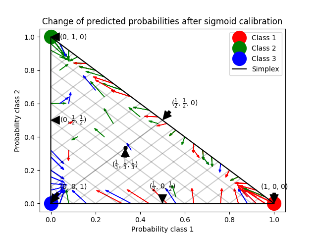
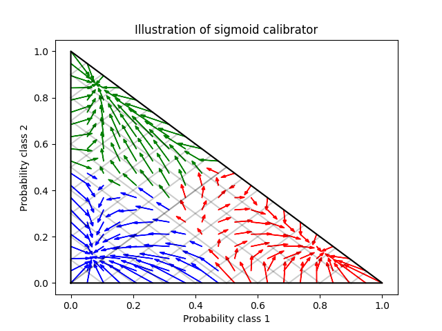

Note
Click here to download the full example code or run this example in your browser via Binder
Probability Calibration for 3-class classification¶
This example illustrates how sigmoid calibration changes predicted probabilities for a 3-class classification problem. Illustrated is the standard 2-simplex, where the three corners correspond to the three classes. Arrows point from the probability vectors predicted by an uncalibrated classifier to the probability vectors predicted by the same classifier after sigmoid calibration on a hold-out validation set. Colors indicate the true class of an instance (red: class 1, green: class 2, blue: class 3).
The base classifier is a random forest classifier with 25 base estimators (trees). If this classifier is trained on all 800 training datapoints, it is overly confident in its predictions and thus incurs a large log-loss. Calibrating an identical classifier, which was trained on 600 datapoints, with method=’sigmoid’ on the remaining 200 datapoints reduces the confidence of the predictions, i.e., moves the probability vectors from the edges of the simplex towards the center. This calibration results in a lower log-loss. Note that an alternative would have been to increase the number of base estimators which would have resulted in a similar decrease in log-loss.
- 
- 
Out:
Log-loss of
* uncalibrated classifier trained on 800 datapoints: 1.280
* classifier trained on 600 datapoints and calibrated on 200 datapoint: 0.534
print(__doc__)
# Author: Jan Hendrik Metzen <jhm@informatik.uni-bremen.de>
# License: BSD Style.
import matplotlib.pyplot as plt
import numpy as np
from sklearn.datasets import make_blobs
from sklearn.ensemble import RandomForestClassifier
from sklearn.calibration import CalibratedClassifierCV
from sklearn.metrics import log_loss
np.random.seed(0)
# Generate data
X, y = make_blobs(n_samples=1000, n_features=2, random_state=42,
cluster_std=5.0)
X_train, y_train = X[:600], y[:600]
X_valid, y_valid = X[600:800], y[600:800]
X_train_valid, y_train_valid = X[:800], y[:800]
X_test, y_test = X[800:], y[800:]
# Train uncalibrated random forest classifier on whole train and validation
# data and evaluate on test data
clf = RandomForestClassifier(n_estimators=25)
clf.fit(X_train_valid, y_train_valid)
clf_probs = clf.predict_proba(X_test)
score = log_loss(y_test, clf_probs)
# Train random forest classifier, calibrate on validation data and evaluate
# on test data
clf = RandomForestClassifier(n_estimators=25)
clf.fit(X_train, y_train)
clf_probs = clf.predict_proba(X_test)
sig_clf = CalibratedClassifierCV(clf, method="sigmoid", cv="prefit")
sig_clf.fit(X_valid, y_valid)
sig_clf_probs = sig_clf.predict_proba(X_test)
sig_score = log_loss(y_test, sig_clf_probs)
# Plot changes in predicted probabilities via arrows
plt.figure()
colors = ["r", "g", "b"]
for i in range(clf_probs.shape[0]):
plt.arrow(clf_probs[i, 0], clf_probs[i, 1],
sig_clf_probs[i, 0] - clf_probs[i, 0],
sig_clf_probs[i, 1] - clf_probs[i, 1],
color=colors[y_test[i]], head_width=1e-2)
# Plot perfect predictions
plt.plot([1.0], [0.0], 'ro', ms=20, label="Class 1")
plt.plot([0.0], [1.0], 'go', ms=20, label="Class 2")
plt.plot([0.0], [0.0], 'bo', ms=20, label="Class 3")
# Plot boundaries of unit simplex
plt.plot([0.0, 1.0, 0.0, 0.0], [0.0, 0.0, 1.0, 0.0], 'k', label="Simplex")
# Annotate points on the simplex
plt.annotate(r'($\frac{1}{3}$, $\frac{1}{3}$, $\frac{1}{3}$)',
xy=(1.0/3, 1.0/3), xytext=(1.0/3, .23), xycoords='data',
arrowprops=dict(facecolor='black', shrink=0.05),
horizontalalignment='center', verticalalignment='center')
plt.plot([1.0/3], [1.0/3], 'ko', ms=5)
plt.annotate(r'($\frac{1}{2}$, $0$, $\frac{1}{2}$)',
xy=(.5, .0), xytext=(.5, .1), xycoords='data',
arrowprops=dict(facecolor='black', shrink=0.05),
horizontalalignment='center', verticalalignment='center')
plt.annotate(r'($0$, $\frac{1}{2}$, $\frac{1}{2}$)',
xy=(.0, .5), xytext=(.1, .5), xycoords='data',
arrowprops=dict(facecolor='black', shrink=0.05),
horizontalalignment='center', verticalalignment='center')
plt.annotate(r'($\frac{1}{2}$, $\frac{1}{2}$, $0$)',
xy=(.5, .5), xytext=(.6, .6), xycoords='data',
arrowprops=dict(facecolor='black', shrink=0.05),
horizontalalignment='center', verticalalignment='center')
plt.annotate(r'($0$, $0$, $1$)',
xy=(0, 0), xytext=(.1, .1), xycoords='data',
arrowprops=dict(facecolor='black', shrink=0.05),
horizontalalignment='center', verticalalignment='center')
plt.annotate(r'($1$, $0$, $0$)',
xy=(1, 0), xytext=(1, .1), xycoords='data',
arrowprops=dict(facecolor='black', shrink=0.05),
horizontalalignment='center', verticalalignment='center')
plt.annotate(r'($0$, $1$, $0$)',
xy=(0, 1), xytext=(.1, 1), xycoords='data',
arrowprops=dict(facecolor='black', shrink=0.05),
horizontalalignment='center', verticalalignment='center')
# Add grid
plt.grid(False)
for x in [0.0, 0.1, 0.2, 0.3, 0.4, 0.5, 0.6, 0.7, 0.8, 0.9, 1.0]:
plt.plot([0, x], [x, 0], 'k', alpha=0.2)
plt.plot([0, 0 + (1-x)/2], [x, x + (1-x)/2], 'k', alpha=0.2)
plt.plot([x, x + (1-x)/2], [0, 0 + (1-x)/2], 'k', alpha=0.2)
plt.title("Change of predicted probabilities after sigmoid calibration")
plt.xlabel("Probability class 1")
plt.ylabel("Probability class 2")
plt.xlim(-0.05, 1.05)
plt.ylim(-0.05, 1.05)
plt.legend(loc="best")
print("Log-loss of")
print(" * uncalibrated classifier trained on 800 datapoints: %.3f "
% score)
print(" * classifier trained on 600 datapoints and calibrated on "
"200 datapoint: %.3f" % sig_score)
# Illustrate calibrator
plt.figure()
# generate grid over 2-simplex
p1d = np.linspace(0, 1, 20)
p0, p1 = np.meshgrid(p1d, p1d)
p2 = 1 - p0 - p1
p = np.c_[p0.ravel(), p1.ravel(), p2.ravel()]
p = p[p[:, 2] >= 0]
calibrated_classifier = sig_clf.calibrated_classifiers_[0]
prediction = np.vstack([calibrator.predict(this_p)
for calibrator, this_p in
zip(calibrated_classifier.calibrators_, p.T)]).T
prediction /= prediction.sum(axis=1)[:, None]
# Plot modifications of calibrator
for i in range(prediction.shape[0]):
plt.arrow(p[i, 0], p[i, 1],
prediction[i, 0] - p[i, 0], prediction[i, 1] - p[i, 1],
head_width=1e-2, color=colors[np.argmax(p[i])])
# Plot boundaries of unit simplex
plt.plot([0.0, 1.0, 0.0, 0.0], [0.0, 0.0, 1.0, 0.0], 'k', label="Simplex")
plt.grid(False)
for x in [0.0, 0.1, 0.2, 0.3, 0.4, 0.5, 0.6, 0.7, 0.8, 0.9, 1.0]:
plt.plot([0, x], [x, 0], 'k', alpha=0.2)
plt.plot([0, 0 + (1-x)/2], [x, x + (1-x)/2], 'k', alpha=0.2)
plt.plot([x, x + (1-x)/2], [0, 0 + (1-x)/2], 'k', alpha=0.2)
plt.title("Illustration of sigmoid calibrator")
plt.xlabel("Probability class 1")
plt.ylabel("Probability class 2")
plt.xlim(-0.05, 1.05)
plt.ylim(-0.05, 1.05)
plt.show()
Total running time of the script: ( 0 minutes 0.598 seconds)